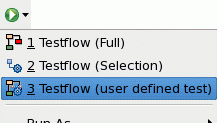
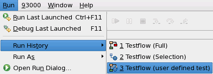

Adding user defined testflows to the Run menu
You may add your own testflows (user defined) to the Run menu.
Procedure
-
Open the Run testflow configuration window:
- On the menu choose
-
For every user defined testflow you want to add to the menu:
Results
Run menu on the toolbar

Run menu on the main menu

Functional changes
- Introduced in SmarTest 6.5.3